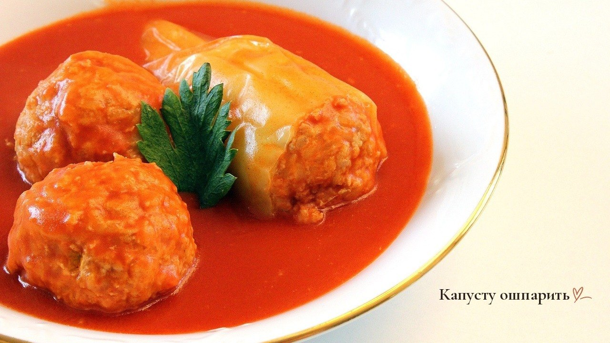
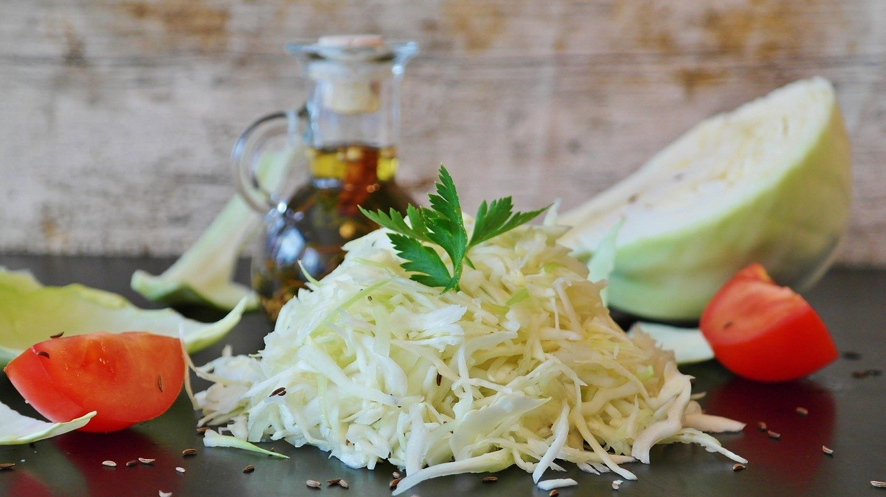
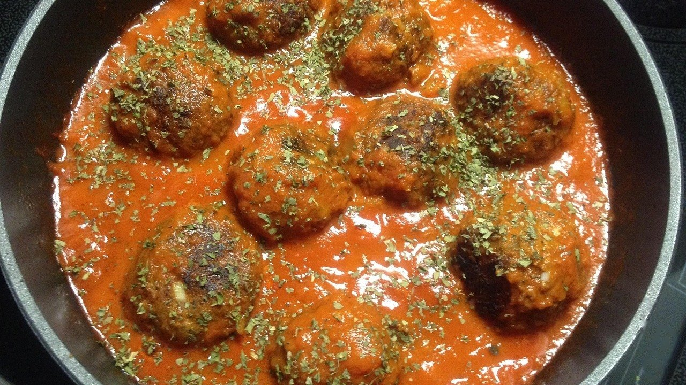

Ленивые голубцы с капустой и фаршем: 5 ошибок, из-за которых они разваливаются

Ленивые голубцы с капустой и фаршем придумали ради экономии времени. Не нужно варить кочан и заворачивать листья, всё смешал и слепил. Но именно в этой простоте и прячутся ошибки.
Я готовлю и обычные голубцы, и ленивые. В будни почти всегда выручают ленивые: вкус тот же, а времени уходит вдвое меньше.
Чаще всего ленивые голубцы либо разваливаются в соусе, либо получаются жёсткими, с хрустящей сырой капустой внутри. Обе беды из-за того, как подготовить капусту и рис.
Ошибка №1: класть капусту сырой и крупно нарезанной
Сырая капуста за время тушения не успевает стать мягкой. Крупные куски торчат из фарша, мешают голубцам держать форму, и при переворачивании они рассыпаются.
Что делать: мелко нашинковать капусту и обдать её кипятком на 3–5 минут, потом хорошо отжать.
Отжимать важно: лишняя вода из капусты делает фарш жидким, и голубцы расплываются на сковороде.

Ошибка №2: брать сырой или полностью сваренный рис
Сырой рис забирает сок из мяса и остаётся твёрдым. Полностью сваренный разваривается в кашу, и голубец внутри становится липким.
Что делать: отварить рис до полуготовности, минут 7, и остудить перед тем, как смешивать с фаршем.
Горячий рис нагревает фарш, и масса начинает липнуть к рукам. Пусть постоит, пока вы режете капусту.
Ошибка №3: пропорции «на глаз»
Если капусты и риса слишком много, а мяса мало, голубцам нечем держаться. Фарш здесь работает как связка, и без него вся масса расползается.
Что делать: на 500 граммов фарша брать примерно столько же капусты и полстакана сухого риса.
Одно яйцо на такую порцию помогает массе держаться, но больше не нужно: белок сделает голубцы плотными и резиновыми.
Ошибка №4: сразу заливать соусом
Если сырые голубцы сразу залить подливкой, они начинают распадаться ещё до того, как схватятся. Соус становится мутным, с кусками капусты и риса.
Что делать: сначала обжарить голубцы с двух сторон до лёгкой корочки, и только потом заливать соусом.
Корочка держит форму, а внутри голубцы остаются мягкими. Можно не обжаривать, а запечь их 15 минут в духовке без соуса, это даже проще.
Ошибка №5: жидкий соус и сильный огонь
Когда соуса много и он бурно кипит, голубцы толкаются и разваливаются. А если соус слишком жидкий, они ещё и становятся пресными.
Что делать: смешать сметану с томатной пастой и водой до густоты жидкой сметаны и тушить под крышкой на слабом огне около 40 минут.
Соус должен доходить примерно до середины голубцов. Верхняя часть доходит паром под крышкой и не размокает.

Если голубцы всё-таки разваливаются
Значит, масса получилась слишком влажной. В неё можно добавить ложку манки или немного панировочных сухарей и дать постоять 15 минут, чтобы они набухли.
Ещё помогают влажные руки при лепке. Голубец получается гладким, без трещин, и меньше теряет форму в соусе.
Какую капусту брать
Для ленивых голубцов подходит обычная белокочанная капуста. Осенняя плотнее и слаще летней, её особенно важно обдать кипятком, иначе она так и останется хрустящей.
Пекинская капуста тоже подходит: она нежнее, её не нужно ошпаривать, достаточно мелко нарезать. Голубцы с ней получаются мягче, но чуть менее «капустными» по вкусу.
Чем мельче нарезка, тем лучше голубцы держат форму. Можно даже прокрутить капусту через мясорубку вместе с луком, тогда её в готовом блюде почти не видно.
Капусту обдают кипятком и отжимают, рис кладут полуготовым, а соус наливают только до середины: на этом ленивые голубцы и держатся.
А вы готовите ленивые голубцы на сковороде или в духовке?